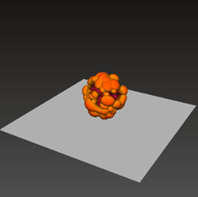
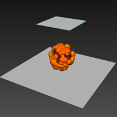
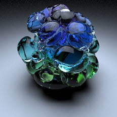
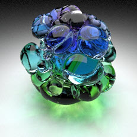
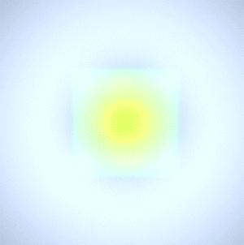

使用自发光着色器实现折射焦散

通过正确的设置，我们可以使用 Arnold 实现焦散效果。本简短教程介绍如何设置一个包含“液体”网格的场景，并在指定给它的 standard_surface 着色器中启用 caustics*（高级）。该场景使用了一个 *emission_scale 值很高的平面，由它产生折射焦散效果。
目前还无法实现很小但很亮的光源（例如透过白兰地酒杯的聚光灯）产生的“硬”焦散。
Arnold 使用简单的单向路径跟踪。光线从摄影机处（而非灯光处）开始。Arnold 不使用双向路径跟踪（也不使用任何其他双向技术，如从灯光发射光线的光子贴图技术）。当使用标准灯光（例如点光源和聚光灯这种零面积的理想化灯光（也就是点光源））时，Arnold 的 GI/反射/折射光线根本无法射中灯光。因此，不会形成焦散。
但是，我们可以通过增大点光源和聚光灯的“半径”参数（值越大，噪波越少），将它们变成有限大小的灯光，这样它们就变成了球形灯光，从而可以产生美丽的软阴影和柔和高光。还必须启用灯光的 transmission，以便显示焦散。然后，GI/反射/折射光线应该就可以“看见”这些灯光了。
您可以不使用 Arnold 的标准灯光，而是创建一个多边形网格，为其指定一个平面自发光着色器，然后让 GI 引擎“找到”该灯光。这样便会得到焦散。但是，这种方法的效率极低，因为小的自发光物体往往难以射中。您需要大量光线或一个非常大的自发光物体才能让噪波变得可以接受。正因为如此，用户手册指出我们可以实现大型自发光物体产生的“软”焦散。
有关本教程中使用的场景文件，请单击此处。
- 首先，打开场景文件。该场景包含一个起始的基本对象。创建一个多边形地板平面，并将其放在网格下方。

自发光平面
- 再创建一个平面，并将其放在网格上方，如下所示。

- 为多边形网格上方的多边形平面指定一个 standard_surface 着色器。这将代表我们的光源。将 standard_surface 着色器的 base_weight 值减小到 0，并将 emission 增加到 10 左右。
网格着色
为要产生折射焦散的多边形网格指定一个 standard_surface 着色器。我们要将其设置为玻璃着色器。
将 diffuse 值减小到 0。将 specular_weight 增加到 1，并将 specular_roughness 减小到 0。将 transmission_weight 增加到 1，并将 IOR 更改为玻璃的折射率 (1.5)。
接下来，我们将为着色器添加一个带颜色的染色。为玻璃 standard_surface 着色器的 transmission_color 添加一些颜色。
折射焦散
要透过玻璃查看折射焦散，我们必须在指定给玻璃网格的 standard_surface 着色器中启用折射焦散。可以在“高级”(Advanced)下找到“焦散”(caustics)。启用此项。
在下面的图像中，您可以看到启用“焦散”(Caustics)后的区别。
|  |  |
| 焦散(Caustics)：禁用 | 焦散(Caustics)：启用 |
噪波
要减少焦散中的噪波，必须增加漫反射采样数。下面的动画显示了使用不同漫反射采样数渲染焦散的区别：分别为 3 个和 6 个漫反射采样。使用此属性时务必小心，因为增大此值会显著增加渲染时间。
 |
 |
| 漫反射采样数：3 | 漫反射采样数：6（渲染时间长很多）。 |
就是这样。现在您可以开始渲染了。可以尝试渲染其他一些对象。使用此方法时的注意事项：
- 精细调整指定了自发光着色器的几何体的正确自发光量，否则可能会产生很多白色噪波。
- 增加漫反射采样数可减少噪波。
非常感谢 SOuP Development 的 Peter Shipkov 提供本教程中使用的 Maya 场景。